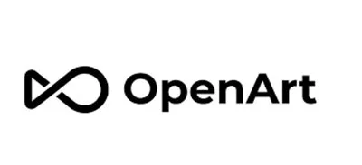
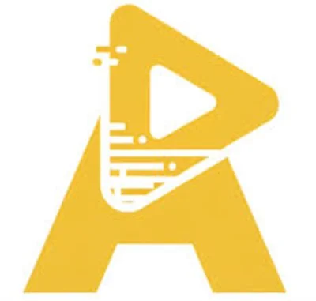

Best AI Image & Design Tools 2026 – Generate Stunning Visuals
AI image generation tools have made professional graphic design and digital art creation accessible to everyone — no design degree required. Whether you need to create product photos, generate illustrations, design logos, or edit images in Photoshop-level detail, these are the best AI image and design tools in 2026. All curated and tested by the WebAlati team.
Compare the top two: Midjourney vs DALL-E 3 →
Some links on this page are affiliate links. We may earn a commission at no extra cost to you. Disclosure policy →

Adobe Firefly
FreemiumGenerative AI image tool deeply integrated into Adobe Photoshop and Illustrator. Commercially safe (trained on licensed content), advanced style control and detail management. Industry standard.
Try Adobe Firefly →
OpenArt AI
FreemiumComprehensive AI image platform combining multiple advanced models. Text-to-image, image editing, background removal, image-to-video, and custom model training — all in one place.
Try OpenArt →
Galaxy AI
FreemiumAI visual content generation platform powered by advanced models for creating images and videos. Supports creative workflows for design and media production at scale.
Try Galaxy AI →
Artta AI
FreemiumDigital art generation platform focused on illustrations and unique visual styles. Supports creative design workflows from text prompts for personal and commercial use.
Try Artta AI →
Photopea
FreemiumAdvanced online photo editor with full PSD, Layers, Masks support running directly in the browser. The best free Photoshop alternative available — no installation needed.
Try Photopea →Frequently Asked Questions – AI Image Tools
What is the best AI image generator in 2026?
Adobe Firefly is the industry standard for professional image generation, especially for commercial use since its models are trained on licensed content. OpenArt AI is the best all-in-one platform for combining multiple models.
Can I use AI-generated images commercially?
Yes — Adobe Firefly images are commercially safe. OpenArt AI, Galaxy AI, and Artta AI also allow commercial use. Always check the specific licensing terms for each platform and the model used.
Is there a free online Photoshop alternative?
Photopea is the best free online Photoshop alternative. It supports PSD files, works in any browser, and has virtually all the features of desktop Photoshop — completely free to use.
What is the difference between AI image generators and image editors?
AI image generators (like Galaxy AI, Adobe Firefly, OpenArt AI) create new images from text prompts. AI image editors (like Photopea, Cleanup.pictures) modify or enhance existing images by removing backgrounds, cleaning up objects, or applying effects. Many creators use both: generate with AI, then refine with an AI editor.
How do I create a YouTube thumbnail using AI?
Galaxy AI and Adobe Firefly are the top choices for generating AI thumbnail images. After creating the image, edit text overlays and layout in Canva or Photopea. For testing which thumbnail performs better before publishing, use Thumbnailtest.com — A/B testing thumbnails can improve YouTube CTR by 20-40%.
Some links on this page are affiliate links. We may earn a commission at no extra cost to you. Disclosure policy →